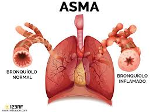

Asma

Descripción
El asma es una enfermedad crónica que afecta a personas de todas las edades. Se debe a la inflamación y la contracción de los músculos que rodean las vías respiratorias, las cuales dificultan la respiración.
Causas
Las causas del asma pueden incluir factores genéticos, ambientales y la exposición a irritantes como alérgenos, humo del tabaco, contaminación del aire y estrés.
Síntomas
Los síntomas de asma incluyen:
- Dificultad para respirar.
- Opresión en el pecho.
- Sibilancias (un sonido silbante al respirar).
- Tos, especialmente durante la noche o al hacer ejercicio.
- Fatiga durante el esfuerzo físico.
Artículos Relacionados
Para más información haga clic en los siguientes enlaces:
Artículo sobre Asma Mapa de imagen sobre el asmaSíntomas y medicamentos para el asma
Videos Relacionados
Video explicativo de Asma:
Para volver a la página principal, pulsa aquí.